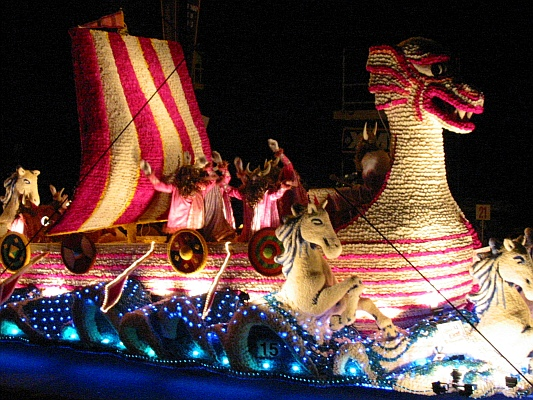

La preunmié Batâle dé Flieurs eut lieu en mil neu chents deux pour célébrer la coronâtion du Rouai Êdouard VII.
L'occâsion fut un té grand succès à cause du grand nombre dé participants ov lus cârrosses décorées qué chutte fête d'vînt eune fête annuelle, et ch'tait seulement duthant l'êté dé mil neu chents quatorze quand les gens lus prépathaient pour eune autre batâle qué la fête arrêtit.
La Batâle dé Flieurs èrquémenchit en mil neu chents vîngt-deux comme partie d'la fête du Village d'La Preunmié Tour et continnuit jusqu'en mil neu chents vîngt-sept et avait lieu dans l'par d'à côté.

En mil neu chents vîngt-huit ch'tait la Chambre d'Conmèrce tch'en prînt chèrge, et ch'tait lé c'menchement d'la Batâle à Springfield, et oulle y continnuit jusqu'au c'menchement d'la dreine dgèrre.
Auprès l'Otchupâtion, pour célébrer la fête d'la Grande Brétangne en mil neu chents chînquante-tch'ieune, la Batâle èrquémenchit, mais chutte fais sus l'Av'nue Victoria, dé West Park jusqu'à La Preunmié Tour et y continnue jusqu'au jour d'aniet.
D'abord, les exhibits 'taient flieuthies ov des palmes, et souvent les palmes tch'avaient fait pliaîsi ès pâssants lé long du Mathais à St. Ouën lé jour dé d'vant lus r'donnaient pliaîsi lé lend'main dans la pathade.
Aniet la construction et l'flieuthissage des exhibits sont dév'nus hardi complyitchis et couôteux, et les siens tchi sont en chèrge dé produithe ches mangnifiques "mithacl'yes sus reues" méthitent nout' aîgue et support.
La Batâle dé Flieurs a donnée hardi d'pliaîsi à des millions avaû l's années, et ch'est à nous tous dé faithe dé nout' mus pour garanti qu'ou piêsse continnuer pour bein d's années à v'nîn.
Michael Vautier
Viyiz étout: